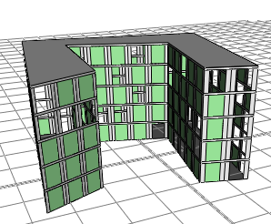
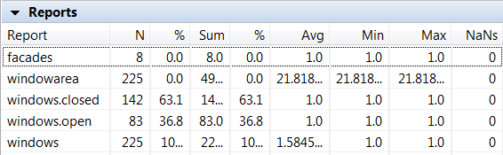

report operation
Syntax
report(key, value)
Parameters
- key (string)
A string which defines a key for a report collection. Keys can be grouped with the name separator ''.'' - value (float, bool, string)
Value (or variable / shape attribute) to add to the collection.
Description
The report operation permits collection of arbitrary data during model generation. The operation takes two parameters: a key of type string and a value of any type. The key and value type define a collection to which the value is added on every invocation. After generation, the collections are assessed statistically and displayed in the Reports shelf in the Inspector.
Reports can be manually exported from the Inspector via the copy-paste clipboard (select the rows you want to export with shift and the cursor keys, hit ctrl-c and paste the data to a text editor or a spreadsheet). Python scripting provides another, more powerful way to export the reports; scripting allows for accessing all values in the collections, see Script-based Export.
Examples
Reporting Window State
|  |
Lot -->
extrude(30)
comp(f) { side : Facade | top : Roof }
Facade -->
report("facades", 1)
split(y) { ~5 : Floor | ~0.5 : Ledge }*
Floor -->
split(x) { ~1 : Tile | 2 : Window | ~1 : Tile}*
Window -->
40%:
report("windowarea", geometry.area())
report("windows.open", 1)
NIL
else:
report("windowarea", geometry.area())
report("windows.closed", 1)
color("#aaffaa")
|
| The rules on the right produce the model above and the report shown below. |
|  |
Copyright ©2008-2021 Esri R&D Center Zurich. All rights reserved.